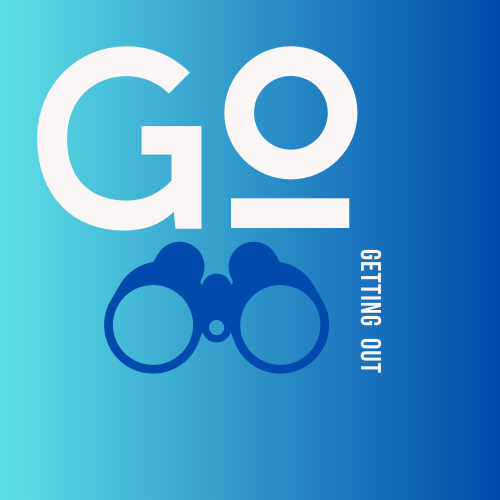
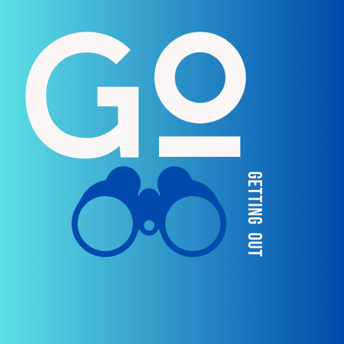

Fortress of the Bear
Fortress of the Bear is an educational bear rescue facility that provides protection and care for orphaned bears as permitted by the Alaska Department of Fish and Game. The facility is an abandoned paper pulp mill that has been converted into large holding tanks filled with natural features including streams and ponds. The bears who have been adopted were orphaned cubs who had encroached into human populated areas, and were in danger of being destroyed. Because of their youth and their introduction to human population areas, these bears could not survive in the wild. Fortress of the Bear rescues these orphaned bears and cares for them. They are wild bears, though some training is provided to help them interact with the veterinarians and others who care for them. For example, they are taught a form of basic sign language. They are not performers or zoo animals. The facility is away from populated areas, and other wild bears are known to come close to the facility to interact with these protected bears. Tours are available. (http://www.fortressofthebear.org/our-mission)

Alaska Raptor Center
Alaska Raptor Center rescues treats, and rehabilitates, and eventually releases wild raptor birds who have been injured in the wild. They typically care for about 200 birds every year. For birds who cannot be rehabilitated or released, they may provide long term housing and care as Raptors-in-Residence. Their current 24 Raptors-in-Residence include bald and golden eagles, hawks, falcons and owls. The facility includes an indoor bald eagle flight training center where raptors are provided a safe environment to relearn flight skills. Eventually, they may be moved to outdoor facilities before being released. Tours are available. (https://alaskaraptor.org)
Sitka Sound Science Center
Sitka Sound Science Center states that its mission is “to increasing understanding and awareness of terrestrial and aquatic ecosystems of Alaska through education and research.” It is in a building once owned by Sheldon Jackson College, and was erected in 1929. Tours are available which include a tide pool touch tank, aquarium, and the salmon hatchery. (https://sitkascience.org/hatchery/)